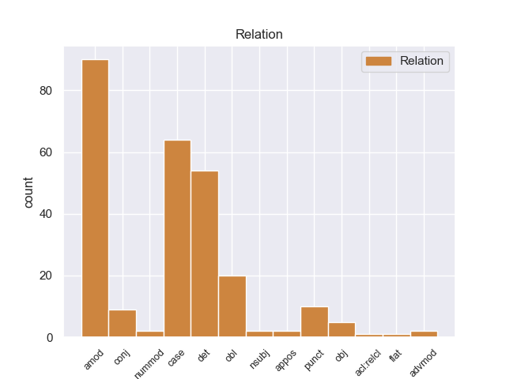
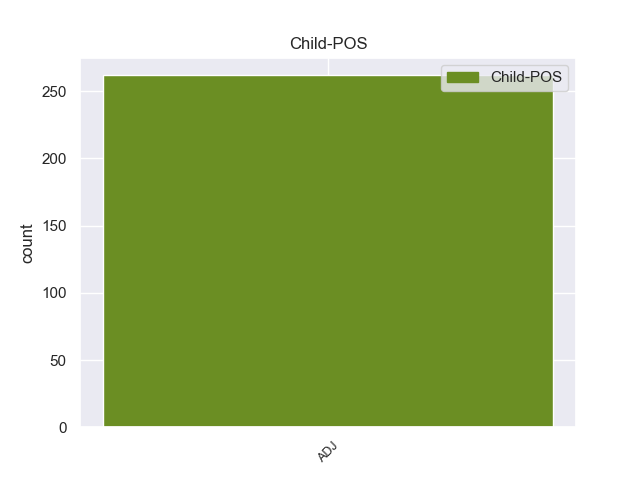

Distribution of features within this leaf



Agreement Rules sorted by frequency.
- When the dependent token is the adjectival modifier(amod) of the head token, and the dependent token is ADJ.
1 El _ _ _ _ 0 _ _ _
2 actual _ _ _ _ 0 _ _ _
3 escudo _ _ _ _ 0 _ _ _
4 está _ _ _ _ 0 _ _ _
5 formado _ _ _ _ 0 _ _ _
6 por _ _ _ _ 0 _ _ _
7 dos _ _ _ _ 0 _ _ _
8 círculos _ _ _ _ 0 _ _ _
9 concéntricos _ _ _ _ 0 _ _ _
10 con _ _ _ _ 0 _ _ _
11 la _ _ _ _ 0 _ _ _
12 leyenda _ _ _ _ 0 _ _ _
13 GIRONA _ _ _ _ 0 _ _ _
14 FC _ _ _ _ 0 _ _ _
15 en _ _ _ _ 0 _ _ _
16 blanco _ _ _ _ 0 _ _ _
17 sobre _ _ _ _ 0 _ _ _
18 fondo _ _ _ _ 0 _ _ _
19 rojo _ _ _ _ 0 _ _ _
20 , _ _ _ _ 0 _ _ _
21 el _ _ _ _ 0 _ _ _
22 círculo _ _ _ _ 0 _ _ _
23 interior _ _ _ _ 0 _ _ _
24 esta _ _ _ _ 0 _ _ _
25 cruzado _ _ _ _ 0 _ _ _
26 por _ _ _ _ 0 _ _ _
27 19 _ _ _ _ 0 _ _ _
28 franjas _ _ _ _ 0 _ _ _
29 , _ _ _ _ 0 _ _ _
30 10 _ _ _ _ 0 _ _ _
31 blancas _ _ _ _ 0 _ _ _
32 y _ _ _ _ 0 _ _ _
33 9 _ _ _ _ 0 _ _ _
34 rojas _ _ _ _ 0 _ _ _
35 portando _ _ _ _ 0 _ _ _
36 un _ _ _ _ 0 _ _ _
37 blasón blasón ADJ _ Gender=Masc|Number=Plur 0 _ _ _
38 lonsanjado _ _ _ _ 0 _ _ _
39 de _ _ _ _ 0 _ _ _
40 oro _ _ _ _ 0 _ _ _
41 con _ _ _ _ 0 _ _ _
42 cuatro _ _ _ _ 0 _ _ _
43 palos _ _ _ _ 0 _ _ _
44 verticales _ _ _ _ 0 _ _ _
45 gules _ _ _ _ 0 _ _ _
46 y _ _ _ _ 0 _ _ _
47 escusón _ _ _ _ 0 _ _ _
48 central _ _ _ _ 0 _ _ _
49 cuadrilongo _ _ _ _ 0 _ _ _
50 ibérico ibérico ADJ _ Gender=Masc|Number=Plur 37 amod _ _
51 verado _ _ _ _ 0 _ _ _
52 de _ _ _ _ 0 _ _ _
53 ondas _ _ _ _ 0 _ _ _
54 rojas _ _ _ _ 0 _ _ _
55 y _ _ _ _ 0 _ _ _
56 blancas _ _ _ _ 0 _ _ _
57 . _ _ _ _ 0 _ _ _
1 En _ _ _ _ 0 _ _ _
2 el _ _ _ _ 0 _ _ _
3 caso _ _ _ _ 0 _ _ _
4 de _ _ _ _ 0 _ _ _
5 estrellas _ _ _ _ 0 _ _ _
6 variables _ _ _ _ 0 _ _ _
7 regulares _ _ _ _ 0 _ _ _
8 , _ _ _ _ 0 _ _ _
9 puede _ _ _ _ 0 _ _ _
10 determinar _ _ _ _ 0 _ _ _
11 se _ _ _ _ 0 _ _ _
12 con _ _ _ _ 0 _ _ _
13 precisión _ _ _ _ 0 _ _ _
14 su _ _ _ _ 0 _ _ _
15 período período NOUN _ Gender=Masc|Number=Sing 0 _ _ _
16 de _ _ _ _ 0 _ _ _
17 variabilidad _ _ _ _ 0 _ _ _
18 y _ _ _ _ 0 _ _ _
19 la _ _ _ _ 0 _ _ _
20 amplitud _ _ _ _ 0 _ _ _
21 de _ _ _ _ 0 _ _ _
22 el _ _ _ _ 0 _ _ _
23 mismo mismo ADJ _ Gender=Masc|Number=Sing 15 det _ _
24 . _ _ _ _ 0 _ _ _
1 Responsable _ _ _ _ 0 _ _ _
2 de _ _ _ _ 0 _ _ _
3 el _ _ _ _ 0 _ _ _
4 equipo equipo NOUN _ Gender=Masc|Number=Sing 0 _ _ _
5 olímpico olímpico ADJ _ Gender=Masc|Number=Sing 4 case _ _
6 fue _ _ _ _ 0 _ _ _
7 el _ _ _ _ 0 _ _ _
8 Comité _ _ _ _ 0 _ _ _
9 Olímpico _ _ _ _ 0 _ _ _
10 de _ _ _ _ 0 _ _ _
11 Montenegro _ _ _ _ 0 _ _ _
12 , _ _ _ _ 0 _ _ _
13 así _ _ _ _ 0 _ _ _
14 como _ _ _ _ 0 _ _ _
15 las _ _ _ _ 0 _ _ _
16 federaciones _ _ _ _ 0 _ _ _
17 deportivas _ _ _ _ 0 _ _ _
18 nacionales _ _ _ _ 0 _ _ _
19 de _ _ _ _ 0 _ _ _
20 cada _ _ _ _ 0 _ _ _
21 deporte _ _ _ _ 0 _ _ _
22 con _ _ _ _ 0 _ _ _
23 participación _ _ _ _ 0 _ _ _
24 . _ _ _ _ 0 _ _ _
1 Muchos _ _ _ _ 0 _ _ _
2 críticos _ _ _ _ 0 _ _ _
3 modernos _ _ _ _ 0 _ _ _
4 han _ _ _ _ 0 _ _ _
5 señalado _ _ _ _ 0 _ _ _
6 que _ _ _ _ 0 _ _ _
7 el _ _ _ _ 0 _ _ _
8 juego _ _ _ _ 0 _ _ _
9 es _ _ _ _ 0 _ _ _
10 muy _ _ _ _ 0 _ _ _
11 lento _ _ _ _ 0 _ _ _
12 para _ _ _ _ 0 _ _ _
13 los _ _ _ _ 0 _ _ _
14 estándares _ _ _ _ 0 _ _ _
15 contemporáneos _ _ _ _ 0 _ _ _
16 e _ _ _ _ 0 _ _ _
17 implica _ _ _ _ 0 _ _ _
18 mucho _ _ _ _ 0 _ _ _
19 más _ _ _ _ 0 _ _ _
20 tiempo _ _ _ _ 0 _ _ _
21 en _ _ _ _ 0 _ _ _
22 la _ _ _ _ 0 _ _ _
23 búsqueda _ _ _ _ 0 _ _ _
24 de _ _ _ _ 0 _ _ _
25 batallas _ _ _ _ 0 _ _ _
26 aleatorias aleatorias ADJ _ Gender=Masc|Number=Sing 39 obl _ _
27 para _ _ _ _ 0 _ _ _
28 incrementar _ _ _ _ 0 _ _ _
29 los _ _ _ _ 0 _ _ _
30 niveles _ _ _ _ 0 _ _ _
31 de _ _ _ _ 0 _ _ _
32 experiencia _ _ _ _ 0 _ _ _
33 y _ _ _ _ 0 _ _ _
34 dinero _ _ _ _ 0 _ _ _
35 que _ _ _ _ 0 _ _ _
36 el _ _ _ _ 0 _ _ _
37 que _ _ _ _ 0 _ _ _
38 se _ _ _ _ 0 _ _ _
39 dedica dedica VERB _ Gender=Masc|Number=Sing 0 _ _ _
40 a _ _ _ _ 0 _ _ _
41 explorar _ _ _ _ 0 _ _ _
42 y _ _ _ _ 0 _ _ _
43 resolver _ _ _ _ 0 _ _ _
44 acertijos _ _ _ _ 0 _ _ _
45 . _ _ _ _ 0 _ _ _
1 La _ _ _ _ 0 _ _ _
2 primera _ _ _ _ 0 _ _ _
3 vez _ _ _ _ 0 _ _ _
4 , _ _ _ _ 0 _ _ _
5 tenía _ _ _ _ 0 _ _ _
6 un _ _ _ _ 0 _ _ _
7 presupuesto _ _ _ _ 0 _ _ _
8 de _ _ _ _ 0 _ _ _
9 700 _ _ _ _ 0 _ _ _
10 € _ _ _ _ 0 _ _ _
11 en _ _ _ _ 0 _ _ _
12 el _ _ _ _ 0 _ _ _
13 servicio _ _ _ _ 0 _ _ _
14 oficial _ _ _ _ 0 _ _ _
15 ( _ _ _ _ 0 _ _ _
16 te _ _ _ _ 0 _ _ _
17 lo _ _ _ _ 0 _ _ _
18 cambio _ _ _ _ 0 _ _ _
19 todo _ _ _ _ 0 _ _ _
20 y _ _ _ _ 0 _ _ _
21 soluciono _ _ _ _ 0 _ _ _
22 el _ _ _ _ 0 _ _ _
23 problema _ _ _ _ 0 _ _ _
24 ) _ _ _ _ 0 _ _ _
25 , _ _ _ _ 0 _ _ _
26 y _ _ _ _ 0 _ _ _
27 en _ _ _ _ 0 _ _ _
28 Pinauto _ _ _ _ 0 _ _ _
29 me _ _ _ _ 0 _ _ _
30 lo _ _ _ _ 0 _ _ _
31 solucionaron solucionaron NOUN _ Gender=Masc|Number=Sing 0 _ _ _
32 por _ _ _ _ 0 _ _ _
33 unos _ _ _ _ 0 _ _ _
34 200 _ _ _ _ 0 _ _ _
35 € _ _ _ _ 0 _ _ _
36 , _ _ _ _ 0 _ _ _
37 cambiando _ _ _ _ 0 _ _ _
38 sólo _ _ _ _ 0 _ _ _
39 lo _ _ _ _ 0 _ _ _
40 necesario necesario ADJ _ Gender=Masc|Number=Sing 31 punct _ _
41 . _ _ _ _ 0 _ _ _
1 Durante _ _ _ _ 0 _ _ _
2 la _ _ _ _ 0 _ _ _
3 primera _ _ _ _ 0 _ _ _
4 mitad _ _ _ _ 0 _ _ _
5 de _ _ _ _ 0 _ _ _
6 la _ _ _ _ 0 _ _ _
7 temporada _ _ _ _ 0 _ _ _
8 de _ _ _ _ 0 _ _ _
9 la _ _ _ _ 0 _ _ _
10 2008-09 _ _ _ _ 0 _ _ _
11 , _ _ _ _ 0 _ _ _
12 su _ _ _ _ 0 _ _ _
13 juego _ _ _ _ 0 _ _ _
14 estuvo _ _ _ _ 0 _ _ _
15 de _ _ _ _ 0 _ _ _
16 nuevo _ _ _ _ 0 _ _ _
17 limitado _ _ _ _ 0 _ _ _
18 , _ _ _ _ 0 _ _ _
19 aunque _ _ _ _ 0 _ _ _
20 cuando _ _ _ _ 0 _ _ _
21 obtuvo _ _ _ _ 0 _ _ _
22 tiempo _ _ _ _ 0 _ _ _
23 de _ _ _ _ 0 _ _ _
24 juego _ _ _ _ 0 _ _ _
25 , _ _ _ _ 0 _ _ _
26 causó _ _ _ _ 0 _ _ _
27 continuamente _ _ _ _ 0 _ _ _
28 impresión _ _ _ _ 0 _ _ _
29 , _ _ _ _ 0 _ _ _
30 a _ _ _ _ 0 _ _ _
31 el _ _ _ _ 0 _ _ _
32 anotar anotar VERB _ Gender=Masc|Number=Sing 0 _ _ _
33 un _ _ _ _ 0 _ _ _
34 par par ADJ _ Gender=Masc|Number=Sing 32 obj _ _
35 de _ _ _ _ 0 _ _ _
36 goles _ _ _ _ 0 _ _ _
37 en _ _ _ _ 0 _ _ _
38 la _ _ _ _ 0 _ _ _
39 victoria _ _ _ _ 0 _ _ _
40 4-2 _ _ _ _ 0 _ _ _
41 de _ _ _ _ 0 _ _ _
42 el _ _ _ _ 0 _ _ _
43 Burdeos _ _ _ _ 0 _ _ _
44 sobre _ _ _ _ 0 _ _ _
45 el _ _ _ _ 0 _ _ _
46 Guingamp _ _ _ _ 0 _ _ _
47 en _ _ _ _ 0 _ _ _
48 la _ _ _ _ 0 _ _ _
49 Copa _ _ _ _ 0 _ _ _
50 de _ _ _ _ 0 _ _ _
51 la _ _ _ _ 0 _ _ _
52 Liga _ _ _ _ 0 _ _ _
53 . _ _ _ _ 0 _ _ _
1 Jugó _ _ _ _ 0 _ _ _
2 el _ _ _ _ 0 _ _ _
3 partido _ _ _ _ 0 _ _ _
4 completo _ _ _ _ 0 _ _ _
5 y _ _ _ _ 0 _ _ _
6 marcó _ _ _ _ 0 _ _ _
7 el _ _ _ _ 0 _ _ _
8 segundo segundo ADJ _ Gender=Masc|Number=Sing|NumType=Ord 9 nummod _ _
9 gol gol NOUN _ Gender=Masc|Number=Sing 0 _ _ _
10 español _ _ _ _ 0 _ _ _
11 . _ _ _ _ 0 _ _ _
1 El _ _ _ _ 0 _ _ _
2 cielo _ _ _ _ 0 _ _ _
3 y _ _ _ _ 0 _ _ _
4 la _ _ _ _ 0 _ _ _
5 tierra _ _ _ _ 0 _ _ _
6 ( _ _ _ _ 0 _ _ _
7 Heaven _ _ _ _ 0 _ _ _
8 & _ _ _ _ 0 _ _ _
9 Earth _ _ _ _ 0 _ _ _
10 en _ _ _ _ 0 _ _ _
11 inglés _ _ _ _ 0 _ _ _
12 ) _ _ _ _ 0 _ _ _
13 es _ _ _ _ 0 _ _ _
14 una _ _ _ _ 0 _ _ _
15 película _ _ _ _ 0 _ _ _
16 bélica _ _ _ _ 0 _ _ _
17 de _ _ _ _ 0 _ _ _
18 1993 _ _ _ _ 0 _ _ _
19 con _ _ _ _ 0 _ _ _
20 producción _ _ _ _ 0 _ _ _
21 estadounidense _ _ _ _ 0 _ _ _
22 y _ _ _ _ 0 _ _ _
23 francesa _ _ _ _ 0 _ _ _
24 dirigida dirigido ADJ _ Gender=Fem|Number=Sing|VerbForm=Part 0 _ _ _
25 y _ _ _ _ 0 _ _ _
26 escrita _ _ _ _ 0 _ _ _
27 por _ _ _ _ 0 _ _ _
28 Oliver _ _ _ _ 0 _ _ _
29 Stone _ _ _ _ 0 _ _ _
30 , _ _ _ _ 0 _ _ _
31 y _ _ _ _ 0 _ _ _
32 protagonizada protagonizado ADJ _ Gender=Fem|Number=Sing|VerbForm=Part 24 conj _ _
33 por _ _ _ _ 0 _ _ _
34 Tommy _ _ _ _ 0 _ _ _
35 Lee _ _ _ _ 0 _ _ _
36 Jones _ _ _ _ 0 _ _ _
37 , _ _ _ _ 0 _ _ _
38 Haing _ _ _ _ 0 _ _ _
39 S. _ _ _ _ 0 _ _ _
40 Ngor _ _ _ _ 0 _ _ _
41 , _ _ _ _ 0 _ _ _
42 Joan _ _ _ _ 0 _ _ _
43 Chen _ _ _ _ 0 _ _ _
44 y _ _ _ _ 0 _ _ _
45 Hiep _ _ _ _ 0 _ _ _
46 Thi _ _ _ _ 0 _ _ _
47 Le _ _ _ _ 0 _ _ _
48 . _ _ _ _ 0 _ _ _
1 En _ _ _ _ 0 _ _ _
2 2004 _ _ _ _ 0 _ _ _
3 fue _ _ _ _ 0 _ _ _
4 nominada nominada NOUN _ Gender=Masc|Number=Sing 0 _ _ _
5 a _ _ _ _ 0 _ _ _
6 el _ _ _ _ 0 _ _ _
7 Globo _ _ _ _ 0 _ _ _
8 de _ _ _ _ 0 _ _ _
9 Oro oro ADJ _ Gender=Masc|Number=Sing 4 appos _ _
10 por _ _ _ _ 0 _ _ _
11 mejor _ _ _ _ 0 _ _ _
12 actriz _ _ _ _ 0 _ _ _
13 de _ _ _ _ 0 _ _ _
14 comedia _ _ _ _ 0 _ _ _
15 . _ _ _ _ 0 _ _ _
1 Una _ _ _ _ 0 _ _ _
2 tercera _ _ _ _ 0 _ _ _
3 versión _ _ _ _ 0 _ _ _
4 afirma _ _ _ _ 0 _ _ _
5 que _ _ _ _ 0 _ _ _
6 el _ _ _ _ 0 _ _ _
7 fundador fundador ADJ _ Gender=Masc|Number=Sing 0 _ _ _
8 de _ _ _ _ 0 _ _ _
9 Psofis _ _ _ _ 0 _ _ _
10 fue _ _ _ _ 0 _ _ _
11 un _ _ _ _ 0 _ _ _
12 varón varón ADJ _ Gender=Masc|Number=Sing 7 advmod _ _
13 , _ _ _ _ 0 _ _ _
14 hijo _ _ _ _ 0 _ _ _
15 de _ _ _ _ 0 _ _ _
16 Arrón _ _ _ _ 0 _ _ _
17 . _ _ _ _ 0 _ _ _
1 La _ _ _ _ 0 _ _ _
2 aproximación _ _ _ _ 0 _ _ _
3 a _ _ _ _ 0 _ _ _
4 los _ _ _ _ 0 _ _ _
5 microarrays _ _ _ _ 0 _ _ _
6 de _ _ _ _ 0 _ _ _
7 proteínas _ _ _ _ 0 _ _ _
8 encara _ _ _ _ 0 _ _ _
9 similares _ _ _ _ 0 _ _ _
10 problemas _ _ _ _ 0 _ _ _
11 a _ _ _ _ 0 _ _ _
12 los _ _ _ _ 0 _ _ _
13 existentes _ _ _ _ 0 _ _ _
14 para _ _ _ _ 0 _ _ _
15 microarrays _ _ _ _ 0 _ _ _
16 destinados _ _ _ _ 0 _ _ _
17 a _ _ _ _ 0 _ _ _
18 ARNm _ _ _ _ 0 _ _ _
19 , _ _ _ _ 0 _ _ _
20 mientras _ _ _ _ 0 _ _ _
21 que _ _ _ _ 0 _ _ _
22 para _ _ _ _ 0 _ _ _
23 la _ _ _ _ 0 _ _ _
24 espectrometría _ _ _ _ 0 _ _ _
25 de _ _ _ _ 0 _ _ _
26 masas _ _ _ _ 0 _ _ _
27 el _ _ _ _ 0 _ _ _
28 problema _ _ _ _ 0 _ _ _
29 es _ _ _ _ 0 _ _ _
30 casar _ _ _ _ 0 _ _ _
31 grandes _ _ _ _ 0 _ _ _
32 cantidades _ _ _ _ 0 _ _ _
33 de _ _ _ _ 0 _ _ _
34 datos _ _ _ _ 0 _ _ _
35 de _ _ _ _ 0 _ _ _
36 masa _ _ _ _ 0 _ _ _
37 contra _ _ _ _ 0 _ _ _
38 masas _ _ _ _ 0 _ _ _
39 predichas _ _ _ _ 0 _ _ _
40 por _ _ _ _ 0 _ _ _
41 bases _ _ _ _ 0 _ _ _
42 de _ _ _ _ 0 _ _ _
43 datos _ _ _ _ 0 _ _ _
44 de _ _ _ _ 0 _ _ _
45 secuencias _ _ _ _ 0 _ _ _
46 de _ _ _ _ 0 _ _ _
47 proteínas _ _ _ _ 0 _ _ _
48 , _ _ _ _ 0 _ _ _
49 además _ _ _ _ 0 _ _ _
50 de _ _ _ _ 0 _ _ _
51 el _ _ _ _ 0 _ _ _
52 complicado _ _ _ _ 0 _ _ _
53 análisis _ _ _ _ 0 _ _ _
54 estadístico _ _ _ _ 0 _ _ _
55 de _ _ _ _ 0 _ _ _
56 muestras _ _ _ _ 0 _ _ _
57 donde _ _ _ _ 0 _ _ _
58 se _ _ _ _ 0 _ _ _
59 detectan detectan VERB _ Gender=Masc|Number=Sing 0 _ _ _
60 múltiples _ _ _ _ 0 _ _ _
61 , _ _ _ _ 0 _ _ _
62 pero _ _ _ _ 0 _ _ _
63 incompletos _ _ _ _ 0 _ _ _
64 , _ _ _ _ 0 _ _ _
65 péptidos péptidos ADJ _ Gender=Masc|Number=Sing 59 acl:relcl _ _
66 de _ _ _ _ 0 _ _ _
67 cada _ _ _ _ 0 _ _ _
68 proteína _ _ _ _ 0 _ _ _
69 . _ _ _ _ 0 _ _ _
1 Entre _ _ _ _ 0 _ _ _
2 sus _ _ _ _ 0 _ _ _
3 logros _ _ _ _ 0 _ _ _
4 más _ _ _ _ 0 _ _ _
5 significativos _ _ _ _ 0 _ _ _
6 hasta _ _ _ _ 0 _ _ _
7 2012 _ _ _ _ 0 _ _ _
8 se _ _ _ _ 0 _ _ _
9 encuentran _ _ _ _ 0 _ _ _
10 ocho _ _ _ _ 0 _ _ _
11 de _ _ _ _ 0 _ _ _
12 las _ _ _ _ 0 _ _ _
13 doce _ _ _ _ 0 _ _ _
14 medallas _ _ _ _ 0 _ _ _
15 de _ _ _ _ 0 _ _ _
16 oro _ _ _ _ 0 _ _ _
17 disputadas _ _ _ _ 0 _ _ _
18 en _ _ _ _ 0 _ _ _
19 los _ _ _ _ 0 _ _ _
20 Juegos _ _ _ _ 0 _ _ _
21 Panamericanos _ _ _ _ 0 _ _ _
22 , _ _ _ _ 0 _ _ _
23 una _ _ _ _ 0 _ _ _
24 Copa _ _ _ _ 0 _ _ _
25 Panamericana _ _ _ _ 0 _ _ _
26 ( _ _ _ _ 0 _ _ _
27 2004 _ _ _ _ 0 _ _ _
28 ) _ _ _ _ 0 _ _ _
29 de _ _ _ _ 0 _ _ _
30 las _ _ _ _ 0 _ _ _
31 tres _ _ _ _ 0 _ _ _
32 disputadas _ _ _ _ 0 _ _ _
33 , _ _ _ _ 0 _ _ _
34 tres _ _ _ _ 0 _ _ _
35 diplomas diplomas NOUN _ Gender=Masc|Number=Sing 0 _ _ _
36 en _ _ _ _ 0 _ _ _
37 los _ _ _ _ 0 _ _ _
38 Juegos _ _ _ _ 0 _ _ _
39 Olímpicos olímpicos ADJ _ Gender=Masc|Number=Sing 35 flat _ _
40 ( _ _ _ _ 0 _ _ _
41 5to _ _ _ _ 0 _ _ _
42 en _ _ _ _ 0 _ _ _
43 1948 _ _ _ _ 0 _ _ _
44 , _ _ _ _ 0 _ _ _
45 8vo _ _ _ _ 0 _ _ _
46 en _ _ _ _ 0 _ _ _
47 1988 _ _ _ _ 0 _ _ _
48 y _ _ _ _ 0 _ _ _
49 8vo _ _ _ _ 0 _ _ _
50 en _ _ _ _ 0 _ _ _
51 2000 _ _ _ _ 0 _ _ _
52 ) _ _ _ _ 0 _ _ _
53 , _ _ _ _ 0 _ _ _
54 dos _ _ _ _ 0 _ _ _
55 sextos _ _ _ _ 0 _ _ _
56 puestos _ _ _ _ 0 _ _ _
57 en _ _ _ _ 0 _ _ _
58 el _ _ _ _ 0 _ _ _
59 campeonato _ _ _ _ 0 _ _ _
60 mundial _ _ _ _ 0 _ _ _
61 ( _ _ _ _ 0 _ _ _
62 1986 _ _ _ _ 0 _ _ _
63 y _ _ _ _ 0 _ _ _
64 2002 _ _ _ _ 0 _ _ _
65 ) _ _ _ _ 0 _ _ _
66 con _ _ _ _ 0 _ _ _
67 once _ _ _ _ 0 _ _ _
68 participaciones _ _ _ _ 0 _ _ _
69 de _ _ _ _ 0 _ _ _
70 las _ _ _ _ 0 _ _ _
71 doce _ _ _ _ 0 _ _ _
72 ediciones _ _ _ _ 0 _ _ _
73 de _ _ _ _ 0 _ _ _
74 el _ _ _ _ 0 _ _ _
75 mismo _ _ _ _ 0 _ _ _
76 y _ _ _ _ 0 _ _ _
77 dos _ _ _ _ 0 _ _ _
78 Champions _ _ _ _ 0 _ _ _
79 Challenge _ _ _ _ 0 _ _ _
80 ( _ _ _ _ 0 _ _ _
81 2005 _ _ _ _ 0 _ _ _
82 y _ _ _ _ 0 _ _ _
83 2007 _ _ _ _ 0 _ _ _
84 ) _ _ _ _ 0 _ _ _
85 , _ _ _ _ 0 _ _ _
86 torneo _ _ _ _ 0 _ _ _
87 que _ _ _ _ 0 _ _ _
88 reúne _ _ _ _ 0 _ _ _
89 a _ _ _ _ 0 _ _ _
90 las _ _ _ _ 0 _ _ _
91 selecciones _ _ _ _ 0 _ _ _
92 de _ _ _ _ 0 _ _ _
93 el _ _ _ _ 0 _ _ _
94 segundo _ _ _ _ 0 _ _ _
95 escalón _ _ _ _ 0 _ _ _
96 y _ _ _ _ 0 _ _ _
97 en _ _ _ _ 0 _ _ _
98 el _ _ _ _ 0 _ _ _
99 que _ _ _ _ 0 _ _ _
100 Argentina _ _ _ _ 0 _ _ _
101 marcha _ _ _ _ 0 _ _ _
102 primero _ _ _ _ 0 _ _ _
103 en _ _ _ _ 0 _ _ _
104 el _ _ _ _ 0 _ _ _
105 medallero _ _ _ _ 0 _ _ _
106 histórico _ _ _ _ 0 _ _ _
107 . _ _ _ _ 0 _ _ _
1 Cuando _ _ _ _ 0 _ _ _
2 fuman _ _ _ _ 0 _ _ _
3 su _ _ _ _ 0 _ _ _
4 primer _ _ _ _ 0 _ _ _
5 porro _ _ _ _ 0 _ _ _
6 de _ _ _ _ 0 _ _ _
7 dicha _ _ _ _ 0 _ _ _
8 planta _ _ _ _ 0 _ _ _
9 , _ _ _ _ 0 _ _ _
10 se _ _ _ _ 0 _ _ _
11 les _ _ _ _ 0 _ _ _
12 aparece _ _ _ _ 0 _ _ _
13 el _ _ _ _ 0 _ _ _
14 fantasma fantasma ADJ _ Gender=Fem|Number=Sing 35 nsubj _ _
15 de _ _ _ _ 0 _ _ _
16 Ivory _ _ _ _ 0 _ _ _
17 , _ _ _ _ 0 _ _ _
18 que _ _ _ _ 0 _ _ _
19 les _ _ _ _ 0 _ _ _
20 ayuda _ _ _ _ 0 _ _ _
21 en _ _ _ _ 0 _ _ _
22 sus _ _ _ _ 0 _ _ _
23 exámenes _ _ _ _ 0 _ _ _
24 para _ _ _ _ 0 _ _ _
25 ingresar _ _ _ _ 0 _ _ _
26 en _ _ _ _ 0 _ _ _
27 la _ _ _ _ 0 _ _ _
28 Universidad _ _ _ _ 0 _ _ _
29 de _ _ _ _ 0 _ _ _
30 Harvard _ _ _ _ 0 _ _ _
31 , _ _ _ _ 0 _ _ _
32 donde _ _ _ _ 0 _ _ _
33 tendrán _ _ _ _ 0 _ _ _
34 que _ _ _ _ 0 _ _ _
35 adaptar adaptar VERB _ Gender=Fem|Number=Sing 0 _ _ _
36 se _ _ _ _ 0 _ _ _
37 a _ _ _ _ 0 _ _ _
38 la _ _ _ _ 0 _ _ _
39 vida _ _ _ _ 0 _ _ _
40 unversitaria _ _ _ _ 0 _ _ _
41 . _ _ _ _ 0 _ _ _
Disagree Examples:
1 Las _ _ _ _ 0 _ _ _
2 pequeñas _ _ _ _ 0 _ _ _
3 flores _ _ _ _ 0 _ _ _
4 se _ _ _ _ 0 _ _ _
5 encuentran _ _ _ _ 0 _ _ _
6 en _ _ _ _ 0 _ _ _
7 racimos racimo NOUN _ Gender=Masc|Number=Plur 0 _ _ _
8 o _ _ _ _ 0 _ _ _
9 solitarias solitario ADJ _ Gender=Fem|Number=Plur 7 conj _ _
10 en _ _ _ _ 0 _ _ _
11 tallos _ _ _ _ 0 _ _ _
12 terminales _ _ _ _ 0 _ _ _
13 , _ _ _ _ 0 _ _ _
14 son _ _ _ _ 0 _ _ _
15 de _ _ _ _ 0 _ _ _
16 color _ _ _ _ 0 _ _ _
17 blanco _ _ _ _ 0 _ _ _
18 , _ _ _ _ 0 _ _ _
19 azul _ _ _ _ 0 _ _ _
20 , _ _ _ _ 0 _ _ _
21 lavanda _ _ _ _ 0 _ _ _
22 , _ _ _ _ 0 _ _ _
23 púrpura _ _ _ _ 0 _ _ _
24 o _ _ _ _ 0 _ _ _
25 azul _ _ _ _ 0 _ _ _
26 - _ _ _ _ 0 _ _ _
27 violeta _ _ _ _ 0 _ _ _
28 . _ _ _ _ 0 _ _ _
1 Es _ _ _ _ 0 _ _ _
2 muy _ _ _ _ 0 _ _ _
3 habitual _ _ _ _ 0 _ _ _
4 que _ _ _ _ 0 _ _ _
5 cada _ _ _ _ 0 _ _ _
6 región _ _ _ _ 0 _ _ _
7 posea _ _ _ _ 0 _ _ _
8 un _ _ _ _ 0 _ _ _
9 postre _ _ _ _ 0 _ _ _
10 tradicional _ _ _ _ 0 _ _ _
11 que _ _ _ _ 0 _ _ _
12 emplea _ _ _ _ 0 _ _ _
13 una _ _ _ _ 0 _ _ _
14 fruta fruta NOUN _ Gender=Fem|Number=Sing 0 _ _ _
15 o _ _ _ _ 0 _ _ _
16 condimento _ _ _ _ 0 _ _ _
17 típico típico ADJ _ Gender=Masc|Number=Sing 14 amod _ _
18 de _ _ _ _ 0 _ _ _
19 la _ _ _ _ 0 _ _ _
20 zona _ _ _ _ 0 _ _ _
21 . _ _ _ _ 0 _ _ _
1 El _ _ _ _ 0 _ _ _
2 Hotel hotel NOUN _ Gender=Fem|Number=Sing 0 _ _ _
3 Oria _ _ _ _ 0 _ _ _
4 , _ _ _ _ 0 _ _ _
5 integrado _ _ _ _ 0 _ _ _
6 recientemente _ _ _ _ 0 _ _ _
7 en _ _ _ _ 0 _ _ _
8 la _ _ _ _ 0 _ _ _
9 cadena _ _ _ _ 0 _ _ _
10 Sercotel _ _ _ _ 0 _ _ _
11 Hoteles _ _ _ _ 0 _ _ _
12 , _ _ _ _ 0 _ _ _
13 está _ _ _ _ 0 _ _ _
14 situado _ _ _ _ 0 _ _ _
15 en _ _ _ _ 0 _ _ _
16 el _ _ _ _ 0 _ _ _
17 centro _ _ _ _ 0 _ _ _
18 de _ _ _ _ 0 _ _ _
19 Tolosa _ _ _ _ 0 _ _ _
20 ( _ _ _ _ 0 _ _ _
21 Guipúzcoa _ _ _ _ 0 _ _ _
22 ) _ _ _ _ 0 _ _ _
23 una _ _ _ _ 0 _ _ _
24 población _ _ _ _ 0 _ _ _
25 tranquila _ _ _ _ 0 _ _ _
26 con _ _ _ _ 0 _ _ _
27 un _ _ _ _ 0 _ _ _
28 importante importante ADJ _ Gender=Masc|Number=Sing 2 case _ _
29 patrimonio _ _ _ _ 0 _ _ _
30 artístico _ _ _ _ 0 _ _ _
31 y _ _ _ _ 0 _ _ _
32 cultural _ _ _ _ 0 _ _ _
33 . _ _ _ _ 0 _ _ _
1 Un _ _ _ _ 0 _ _ _
2 observador _ _ _ _ 0 _ _ _
3 externo _ _ _ _ 0 _ _ _
4 puede _ _ _ _ 0 _ _ _
5 tomar _ _ _ _ 0 _ _ _
6 directamente _ _ _ _ 0 _ _ _
7 las _ _ _ _ 0 _ _ _
8 medidas _ _ _ _ 0 _ _ _
9 nomotéticas _ _ _ _ 0 _ _ _
10 ( _ _ _ _ 0 _ _ _
11 ejemplos _ _ _ _ 0 _ _ _
12 de _ _ _ _ 0 _ _ _
13 éstas _ _ _ _ 0 _ _ _
14 medidas _ _ _ _ 0 _ _ _
15 pueden _ _ _ _ 0 _ _ _
16 ser _ _ _ _ 0 _ _ _
17 el _ _ _ _ 0 _ _ _
18 peso _ _ _ _ 0 _ _ _
19 de _ _ _ _ 0 _ _ _
20 un _ _ _ _ 0 _ _ _
21 objeto _ _ _ _ 0 _ _ _
22 o _ _ _ _ 0 _ _ _
23 la _ _ _ _ 0 _ _ _
24 cantidad cantidad NOUN _ Gender=Fem|Number=Sing 0 _ _ _
25 de _ _ _ _ 0 _ _ _
26 veces _ _ _ _ 0 _ _ _
27 que _ _ _ _ 0 _ _ _
28 se _ _ _ _ 0 _ _ _
29 presenta _ _ _ _ 0 _ _ _
30 un _ _ _ _ 0 _ _ _
31 comportamiento _ _ _ _ 0 _ _ _
32 particular particular ADJ _ Gender=Masc|Number=Sing 24 amod _ _
33 ) _ _ _ _ 0 _ _ _
34 ; _ _ _ _ 0 _ _ _
1 Alberga _ _ _ _ 0 _ _ _
2 una _ _ _ _ 0 _ _ _
3 población población NOUN _ Gender=Fem|Number=Sing 0 _ _ _
4 de _ _ _ _ 0 _ _ _
5 81.188 _ _ _ _ 0 _ _ _
6 habitantes _ _ _ _ 0 _ _ _
7 y _ _ _ _ 0 _ _ _
8 presenta _ _ _ _ 0 _ _ _
9 diversas _ _ _ _ 0 _ _ _
10 particularidades particularidades ADJ _ Gender=Masc|Number=Sing 3 amod _ _
11 fruto _ _ _ _ 0 _ _ _
12 de _ _ _ _ 0 _ _ _
13 su _ _ _ _ 0 _ _ _
14 posición _ _ _ _ 0 _ _ _
15 geográfica _ _ _ _ 0 _ _ _
16 e _ _ _ _ 0 _ _ _
17 historia _ _ _ _ 0 _ _ _
18 , _ _ _ _ 0 _ _ _
19 tanto _ _ _ _ 0 _ _ _
20 en _ _ _ _ 0 _ _ _
21 la _ _ _ _ 0 _ _ _
22 composición _ _ _ _ 0 _ _ _
23 de _ _ _ _ 0 _ _ _
24 su _ _ _ _ 0 _ _ _
25 población _ _ _ _ 0 _ _ _
26 y _ _ _ _ 0 _ _ _
27 sus _ _ _ _ 0 _ _ _
28 actividades _ _ _ _ 0 _ _ _
29 económicas _ _ _ _ 0 _ _ _
30 , _ _ _ _ 0 _ _ _
31 como _ _ _ _ 0 _ _ _
32 en _ _ _ _ 0 _ _ _
33 su _ _ _ _ 0 _ _ _
34 cultura _ _ _ _ 0 _ _ _
35 ( _ _ _ _ 0 _ _ _
36 fruto _ _ _ _ 0 _ _ _
37 de _ _ _ _ 0 _ _ _
38 la _ _ _ _ 0 _ _ _
39 ejemplar _ _ _ _ 0 _ _ _
40 convivencia _ _ _ _ 0 _ _ _
41 de _ _ _ _ 0 _ _ _
42 cristianos _ _ _ _ 0 _ _ _
43 , _ _ _ _ 0 _ _ _
44 musulmanes _ _ _ _ 0 _ _ _
45 , _ _ _ _ 0 _ _ _
46 judíos _ _ _ _ 0 _ _ _
47 e _ _ _ _ 0 _ _ _
48 hindúes _ _ _ _ 0 _ _ _
49 ) _ _ _ _ 0 _ _ _
50 . _ _ _ _ 0 _ _ _